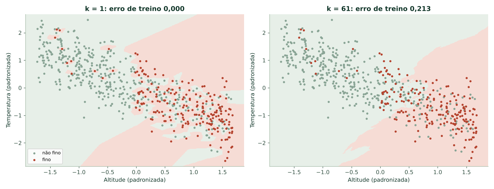
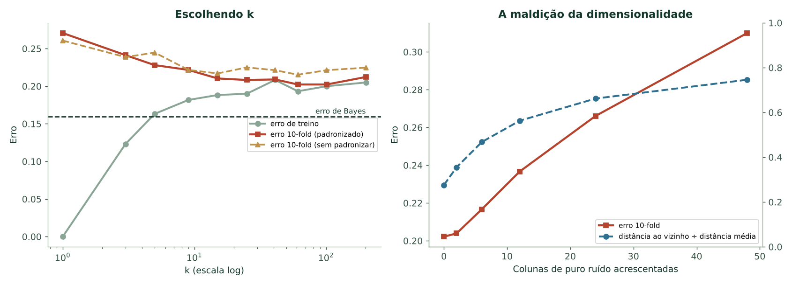

K-nearest neighbors (KNN)
Classifica pelo voto dos k casos mais parecidos — sem modelo, sem parâmetros, e com toda a dificuldade na distância e na escolha de k.
Comece por aqui
O classificador mais simples que existe: para classificar um lote novo, procuram-se os \(k\) lotes do treino mais parecidos com ele e adota-se a classe da maioria. Não há modelo a ajustar, não há parâmetros a estimar — o "modelo" são os próprios dados. Toda a dificuldade está em duas escolhas: o que significa "parecido" (a distância e a escala das variáveis) e quantos vizinhos ouvir (\(k\)).
Cover e Hart (1967) mostraram que, com \(n\to\infty\), o erro do vizinho mais próximo (\(k=1\)) é no máximo o dobro do erro de Bayes. E, com \(k\to\infty\) e \(k/n\to 0\), o kNN atinge o próprio erro de Bayes. É um método que, em princípio, aprende qualquer fronteira; o problema é que "em princípio" exige muitos dados — e cada vez mais à medida que o número de variáveis cresce.
O que é o kNN
Dado \(x_0\), calcula-se a distância dele a cada observação de treino, separam-se as \(k\) mais próximas, \(\mathcal N_k(x_0)\), e estima-se a probabilidade de cada classe pela proporção entre elas. Na regressão, a predição é a média das respostas dos vizinhos.

| k | Fronteira | Viés | Variância | Erro de treino |
|---|---|---|---|---|
| 1 | Irregular, contorna cada ponto | Baixo | Alta | Zero |
| Intermediário | Suave | Moderado | Moderada | Moderado |
| n | Constante: a classe majoritária | Máximo | Nula | A prevalência da minoria |
Pressupostos e como verificá-los
| Pressuposto ou cuidado | Por que importa | Como verificar |
|---|---|---|
| Variáveis padronizadas | A distância soma diferenças em unidades diferentes. | scale() antes de tudo. |
| Variáveis relevantes | Variáveis de ruído entram na distância com o mesmo peso. | Seleção prévia; comparação com e sem cada uma. |
| Poucas dimensões | Em dimensão alta, todos ficam longe de todos. | Razão distância ao vizinho / distância média. |
| k escolhido por validação | k = 1 decora o treino. | knn.cv ou validação cruzada. |
| Classes com tamanhos razoáveis | O voto favorece a classe mais frequente. | Probabilidades e limiar; ponderação. |
| n suficiente | O kNN aprende localmente. | Curva de aprendizado. |
Formulação e cálculo
Em que:
- \(\mathcal N_k(x_0)\)
- os \(k\) pontos do treino mais próximos de \(x_0\)
- \(z_{ij}=(x_{ij}-\bar x_j)/s_j\)
- a variável \(j\) padronizada
- \(d\)
- distância euclidiana
Exemplo numérico: um lote novo e seus vizinhos
O lote novo tem altitude 1.080 m, 20,0 °C, 1.500 mm, 30% de sombra, N 2,9 e pH 5,4; sua probabilidade verdadeira de ser fino é 0,6221.
| Lote | Altitude | Temp. | Chuva | Sombra | N | pH | Distância | Fino |
|---|---|---|---|---|---|---|---|---|
| 506 | 1.158 | 20,0 | 1.406 | 39 | 2,88 | 5,59 | 0,775 | 1 |
| 593 | 1.111 | 20,8 | 1.402 | 20 | 2,87 | 5,48 | 0,793 | 1 |
| 422 | 1.230 | 18,8 | 1.553 | 33 | 2,99 | 5,47 | 0,919 | 1 |
| 570 | 898 | 20,4 | 1.634 | 34 | 2,85 | 5,55 | 0,977 | 0 |
| 503 | 937 | 20,3 | 1.571 | 29 | 3,22 | 5,37 | 1,015 | 0 |
| 264 | 890 | 19,5 | 1.416 | 29 | 2,71 | 5,23 | 1,021 | 0 |
| 457 | 981 | 19,5 | 1.433 | 36 | 2,93 | 5,77 | 1,024 | 0 |
Três dos sete vizinhos são finos: \(\hat P=3/7=0{,}4286\), contra 0,6221 verdadeiro — a regra classificaria o lote como não fino. Observe por quê: quatro dos vizinhos estão abaixo do degrau de 1.050 m (898 a 981 m), porque nas outras cinco variáveis são muito parecidos com o lote novo. O kNN não sabe que a altitude é a variável que importa; pesa todas igualmente. É a mesma limitação que faz o erro crescer quando se acrescentam variáveis irrelevantes.
Sem padronizar, o resultado é outro conjunto de vizinhos: a altitude e a chuva, com desvios-padrão de 263,61 m e 261,37 mm, dominam a distância, e o pH (desvio 0,46) é praticamente ignorado — entre os sete "vizinhos" brutos, o pH vai de 4,87 a 6,13.
Propriedades
- Não paramétrico e local: aprende qualquer fronteira com n suficiente.
- Assintoticamente, o erro com k = 1 é no máximo o dobro do erro de Bayes.
- Sensível à escala e à presença de variáveis irrelevantes.
- Sofre a maldição da dimensionalidade.
- Custo zero no treino; na predição, distância a todos os pontos (ou árvores kd).
- As probabilidades são múltiplos de 1/k.
Como interpretar os resultados
| Elemento | O que informa | Cuidado |
|---|---|---|
| Classe prevista | O voto da maioria. | Empates: knn desempata ao acaso. |
attr(, "prob") | Proporção de votos da classe VENCEDORA. | Converta para P(fino). |
| Curva erro × k | Onde está o compromisso. | Use LOOCV ou validação cruzada. |
| Os vizinhos | Casos parecidos: explicação por exemplos. | Parecidos segundo a métrica escolhida. |
Como executar no R e em Python
Onde executar o código em Python
Não é preciso instalar nada: o Google Colab é um computador na nuvem, gratuito, que executa Python pelo navegador e já traz as bibliotecas usadas aqui (numpy, scipy e matplotlib).
A função knn() do pacote class (que vem com o R) classifica um conjunto de teste a partir do treino: knn(train, test, cl, k). A knn.cv() faz a validação deixando um de fora, que no kNN é exata e barata. O argumento prob = TRUE devolve a proporção de votos da classe vencedora. Padronize as variáveis com scale(), aplicando ao teste a média e o desvio do treino. Para regressão, FNN::knn.reg(). Em Python, sklearn.neighbors.KNeighborsClassifier e KNeighborsRegressor, dentro de um Pipeline com StandardScaler.
library(class)
X <- scale(cafe[, c("alt","temp","chuva","somb","nfol","ph")])
erro <- sapply(c(1, 5, 15, 61), function(k)
mean(knn.cv(X, cafe$fino_f, k = k) != cafe$fino_f))
erro
Exemplo de aplicação
Contexto dos dados
Os dados são fictícios e foram criados pelo autor: 600 lotes de café, cada um com a nota sensorial (escala SCA, de 70,0 a 86,1) e seis variáveis da lavoura — altitude (600 a 1.500 m), temperatura média (14 a 26 °C), chuva anual (mm), sombreamento (%), nitrogênio foliar (dag/kg) e pH do solo. Um lote é fino quando a nota é 80 ou mais (204 lotes, 34,0%). O processo gerador é conhecido e foi desenhado para ter as duas estruturas que os modelos aditivos não representam: um degrau de +4,6 pontos acima de 1.050 m de altitude e uma interação — o sombreamento melhora a nota quando a temperatura passa de 20,5 °C e a piora abaixo disso —, além de partes suaves em chuva, nitrogênio e pH e um erro de desvio-padrão 1,55. Altitude e temperatura têm correlação de −0,822, como na realidade. Como a verdade é conhecida, sabem-se os dois pisos: nenhum modelo de regressão pode ter erro quadrático esperado abaixo de \(\sigma^2=2{,}4025\), e nenhum classificador pode errar menos que o erro de Bayes, 0,1596. O mesmo conjunto atravessa as dez fichas dos grupos de árvores e de classificadores, o que permite comparar todos os métodos na mesma régua.
Código em R
# k vizinhos mais próximos (kNN): exemplo completo ----
# Pacotes: class (incluído no R) e FNN (opcional, para regressão)
# Dados fictícios: 600 lotes de café (arquivo cafe.csv, pasta scripts/ do site).
# Baixe o arquivo para a pasta de trabalho, ou leia direto do endereço:
url <- "https://cassiushenrique.github.io/ModelosEstatisticos/scripts/cafe.csv"
cafe <- if (file.exists("cafe.csv")) read.csv("cafe.csv") else read.csv(url)
str(cafe) # nota, fino (0/1), alt, temp, chuva, somb, nfol, ph
cafe$fino_f <- factor(cafe$fino, levels = c(0, 1), labels = c("nao", "fino"))
table(cafe$fino_f)
library(class)
vars <- c("alt", "temp", "chuva", "somb", "nfol", "ph")
X <- scale(cafe[, vars]) # PADRONIZAR: média 0 e desvio 1 em cada variável
y <- cafe$fino_f
# ---- 1. Um lote novo e seus vizinhos
x0 <- c(alt = 1080, temp = 20.0, chuva = 1500, somb = 30, nfol = 2.9, ph = 5.4)
z0 <- (x0 - attr(X, "scaled:center")) / attr(X, "scaled:scale")
d <- sqrt(colSums((t(X) - z0)^2))
viz <- order(d)[1:7]
cbind(cafe[viz, vars], dist = round(d[viz], 3), fino = cafe$fino[viz])
mean(cafe$fino[viz]) # P(fino) estimada com k = 7
# ---- 2. Escolher k por validação cruzada
# knn.cv() faz a validação deixando um de fora (LOOCV), de graça
ks <- c(1, 3, 5, 9, 15, 25, 41, 61, 101, 201)
erro <- sapply(ks, function(k) { set.seed(1); mean(knn.cv(X, y, k = k) != y) })
plot(ks, erro, log = "x", type = "b", xlab = "k", ylab = "erro (LOOCV)")
k_best <- ks[which.min(erro)]
# ---- 3. Sem padronizar: a distância é dominada pelas variáveis de maior escala
erro_bruto <- sapply(ks, function(k) { set.seed(1); mean(knn.cv(as.matrix(cafe[, vars]), y, k = k) != y) })
cbind(k = ks, padronizado = erro, bruto = erro_bruto)
# ---- 4. Probabilidades: proporção de votos
set.seed(1)
pr <- knn.cv(X, y, k = k_best, prob = TRUE)
p_venc <- attr(pr, "prob") # proporção da classe VENCEDORA
p_fino <- ifelse(pr == "fino", p_venc, 1 - p_venc)
# ---- 5. A maldição da dimensionalidade: colunas de ruído
set.seed(4)
for (q in c(0, 6, 24, 48)) {
Xq <- if (q > 0) cbind(X, matrix(rnorm(nrow(X) * q), ncol = q)) else X
cat(q, "colunas de ruído: erro", mean(knn.cv(Xq, y, k = k_best) != y), "\n")
}
# ---- 6. Regressão (pacote FNN)
# install.packages("FNN")
library(FNN)
r <- knn.reg(train = X, y = cafe$nota, k = 15) # sem 'test': LOOCV
mean((cafe$nota - r$pred)^2)
A mesma análise em Python, com os resultados
Cole o código em um notebook do Google Colab ↗ e execute com Shift+Enter. Os valores abaixo são a saída desse código.
import numpy as np
# ------------------------------------------------------------------
# Bloco comum às fichas deste grupo: funções auxiliares e dados (cab16)
# ------------------------------------------------------------------
import numpy as np
from scipy.stats import norm
# ------------------------------------------------------------------
# Bloco comum às fichas deste grupo: funções auxiliares e dados (dados16)
# ------------------------------------------------------------------
import numpy as np
import pandas as pd
def le_csv(nome):
"""Lê o arquivo de dados da ficha: primeiro na pasta atual; se não
estiver lá (por exemplo, no Google Colab), direto do site."""
try:
return pd.read_csv(nome)
except FileNotFoundError:
return pd.read_csv('https://cassiushenrique.github.io/ModelosEstatisticos/scripts/' + nome)
# Dados fictícios: 600 lotes de café (arquivo cafe.csv, pasta scripts/ do site)
cafe = le_csv('cafe.csv')
ALT, TEMP, CHUVA = (cafe[k].to_numpy(float) for k in ('alt', 'temp', 'chuva'))
SOMB, NFOL, PH = (cafe[k].to_numpy(float) for k in ('somb', 'nfol', 'ph'))
NOTA = cafe['nota'].to_numpy(float); FINO = cafe['fino'].to_numpy(int)
NOMES=['alt','temp','chuva','somb','nfol','ph']
ROT={'alt':'Altitude','temp':'Temperatura','chuva':'Chuva','somb':'Sombreamento','nfol':'N foliar','ph':'pH'}
X=np.column_stack([ALT,TEMP,CHUVA,SOMB,NFOL,PH])
NC,PC=X.shape; SIGN=1.55
def f_nota(alt,temp,chuva,somb,nfol,ph):
deg=4.6*(np.asarray(alt)>=1050); rampa=0.0028*np.clip(np.asarray(alt)-700,0,None)
inter=np.where(np.asarray(temp)>20.5,0.052*np.asarray(somb),-0.030*np.asarray(somb))
agua=-2.6e-6*(np.asarray(chuva)-1450)**2
nitro=2.9*np.log(np.asarray(nfol)/1.6); acid=-1.9*(np.asarray(ph)-5.4)**2
return 74.0+deg+rampa+inter+agua+nitro+acid
def verdade(A): return f_nota(A[:,0],A[:,1],A[:,2],A[:,3],A[:,4],A[:,5])
# ------------------------------------------------------------------ fim do bloco comum
def c(v, d=4): return ('%.*f' % (d, v)).replace('.', ',')
def eqm(o, p): return float(np.mean((np.asarray(o) - np.asarray(p))**2))
def r2(o, p): return 1 - float(np.sum((np.asarray(o)-np.asarray(p))**2))/float(np.sum((np.asarray(o)-np.mean(o))**2))
def acur(o, p): return float(np.mean(np.asarray(o) == np.asarray(p)))
MU = verdade(X) # média verdadeira da nota
PVER = 1 - norm.cdf((80 - MU)/SIGN) # P(fino | x) verdadeira
ERRO_BAYES = float(np.mean(np.minimum(PVER, 1 - PVER)))
EQM_PISO = SIGN**2
def dobras(n, k, seed):
rg = np.random.default_rng(seed)
d = np.tile(np.arange(k), int(np.ceil(n/k)))[:n]; rg.shuffle(d); return d
def cv_reg(fabrica, A, y, k=10, seed=0, reps=1):
"""EQM por validação cruzada. fabrica() devolve um estimador sklearn novo."""
tot = []
for r in range(reps):
d = dobras(len(y), k, seed + 101*r); e = np.empty(len(y))
for j in range(k):
tr, te = d != j, d == j
m = fabrica().fit(A[tr], y[tr]); e[te] = y[te] - m.predict(A[te])
tot.append(float(np.mean(e**2)))
return float(np.mean(tot)), (float(np.std(tot, ddof=1)) if reps > 1 else 0.0)
def cv_clf(fabrica, A, y, k=10, seed=0, reps=1, prob=False):
"""Erro de classificação (e, se prob, log-loss e Brier) por validação cruzada."""
err = []; ll = []; br = []
for r in range(reps):
d = dobras(len(y), k, seed + 101*r); pred = np.empty(len(y)); pp = np.empty(len(y))
for j in range(k):
tr, te = d != j, d == j
m = fabrica().fit(A[tr], y[tr]); pred[te] = m.predict(A[te])
if prob: pp[te] = m.predict_proba(A[te])[:, 1]
err.append(float(np.mean(pred != y)))
if prob:
q = np.clip(pp, 1e-6, 1 - 1e-6)
ll.append(float(-np.mean(y*np.log(q) + (1 - y)*np.log(1 - q))))
br.append(float(np.mean((pp - y)**2)))
if prob: return float(np.mean(err)), float(np.mean(ll)), float(np.mean(br))
return float(np.mean(err)), (float(np.std(err, ddof=1)) if reps > 1 else 0.0)
def padroniza(A, ref=None):
ref = A if ref is None else ref
mu, sd = ref.mean(0), ref.std(0, ddof=1); return (A - mu)/sd, mu, sd
DADOS_TXT = ('600 lotes de café, nota sensorial (escala SCA, de 70 a 86) e seis variáveis de lavoura: '
'altitude, temperatura média, chuva anual, sombreamento, N foliar e pH. Lote "fino" = nota >= 80.')
# ------------------------------------------------------------------ fim do bloco comum
from sklearn.neighbors import KNeighborsClassifier, KNeighborsRegressor
from sklearn.preprocessing import StandardScaler
from sklearn.pipeline import make_pipeline
y=FINO
print('LOTES DE CAFÉ:',DADOS_TXT)
print('Resposta: fino (1) ou não (0). Erro de Bayes = %s.'%c(ERRO_BAYES))
print('\n'+'='*70)
print('UM LOTE NOVO E SEUS VIZINHOS')
x0=np.array([1080.,20.0,1500.,30.,2.9,5.4])
print('Lote novo: altitude 1080 m, 20,0 C, 1500 mm, 30% de sombra, N 2,9, pH 5,4')
print('P(fino) VERDADEIRA para esse lote = %s'%c(float(1-norm.cdf((80-verdade(x0[None,:])[0])/SIGN))))
Z,mu,sd=padroniza(X); z0=(x0-mu)/sd
dz=np.sqrt(((Z-z0)**2).sum(1)); dr=np.sqrt(((X-x0)**2).sum(1))
print()
print('Os 7 vizinhos mais próximos, nas variáveis PADRONIZADAS:')
print('%6s %9s %7s %8s %7s %6s %6s %10s %6s'%('lote','altitude','temp','chuva','sombra','N','pH','distância','fino'))
for i in np.argsort(dz)[:7]:
a=X[i]; print('%6d %9s %7s %8s %7s %6s %6s %10s %6d'%(i+1,c(a[0],0),c(a[1],1),c(a[2],0),c(a[3],0),c(a[4],2),c(a[5],2),c(dz[i],3),y[i]))
v7=np.argsort(dz)[:7]
print(' -> %d de 7 são finos: P(fino) estimada = %s'%(y[v7].sum(),c(y[v7].mean())))
print()
print('Os 7 vizinhos mais próximos SEM padronizar (distância em unidades brutas):')
for i in np.argsort(dr)[:7]:
a=X[i]; print('%6d %9s %7s %8s %7s %6s %6s %10s %6d'%(i+1,c(a[0],0),c(a[1],1),c(a[2],0),c(a[3],0),c(a[4],2),c(a[5],2),c(dr[i],1),y[i]))
v7r=np.argsort(dr)[:7]
print(' -> %d de 7 são finos: P(fino) estimada = %s'%(y[v7r].sum(),c(y[v7r].mean())))
print('Sem padronizar, só a altitude e a chuva (desvios-padrão de ~260) pesam na')
print('distância; temperatura, N e pH (desvios abaixo de 2) são quase ignorados:')
print('veja o pH dos "vizinhos" indo de 4,87 a 6,13.')
print(' desvios-padrão: '+', '.join('%s %s'%(ROT[k],c(s_,2)) for k,s_ in zip(NOMES,sd)))
print('\n'+'='*70)
print('A ESCOLHA DE k: viés contra variância')
print()
print('%5s %14s %16s %16s'%('k','erro treino','erro 10-fold','erro (sem padr.)'))
res=[]
for k in [1,3,5,9,15,25,41,61,101,201]:
f=lambda k=k: make_pipeline(StandardScaler(),KNeighborsClassifier(k))
tr=1-acur(y,f().fit(X,y).predict(X))
er,sdv=cv_clf(f,X,y,10,0,5)
ebr,_=cv_clf(lambda k=k: KNeighborsClassifier(k),X,y,10,0,5)
res.append((k,er)); print('%5d %14s %16s %16s'%(k,c(tr),c(er),c(ebr)))
kb=min(res,key=lambda t:t[1])[0]
print()
print(' melhor k = %d. Com k = 1 o erro de treino é zero: cada lote é o seu'%kb)
print(' próprio vizinho. Com k = 201, a vizinhança é um terço dos dados.')
print('\n'+'='*70)
print('PONDERAR PELA DISTÂNCIA, e as probabilidades')
print()
print('%-34s %10s %10s %10s'%('modelo','erro','log-loss','Brier'))
for nm,f in [('k = %d, votos iguais'%kb,lambda: make_pipeline(StandardScaler(),KNeighborsClassifier(kb))),
('k = %d, peso 1/distância'%kb,lambda: make_pipeline(StandardScaler(),KNeighborsClassifier(kb,weights='distance'))),
('k = 1',lambda: make_pipeline(StandardScaler(),KNeighborsClassifier(1)))]:
er,ll,br=cv_clf(f,X,y,10,0,5,prob=True)
print('%-34s %10s %10s %10s'%(nm,c(er),c(ll),c(br)))
print('Com k = 1 a probabilidade estimada é 0 ou 1: o log-loss explode.')
print('\n'+'='*70)
print('A MALDIÇÃO DA DIMENSIONALIDADE: acrescentando colunas de puro ruído')
rg=np.random.default_rng(4)
print()
print('%18s %14s %22s'%('colunas de ruído','erro 10-fold','dist. ao vizinho/média'))
for q in [0,2,6,12,24,48]:
A=np.column_stack([X,rg.normal(size=(NC,q))]) if q else X
er,_=cv_clf(lambda: make_pipeline(StandardScaler(),KNeighborsClassifier(kb)),A,y,10,0,3)
Za=padroniza(A)[0]; D=np.sqrt(((Za[:,None,:]-Za[None,:,:])**2).sum(2)); np.fill_diagonal(D,np.inf)
rel=float(np.mean(D.min(1))/np.mean(D[np.isfinite(D)]))
print('%18d %14s %22s'%(q,c(er),c(rel,3)))
print()
print('Em dimensão alta, o vizinho mais próximo fica quase tão longe quanto um')
print('lote qualquer: a ideia de "vizinhança" deixa de existir.')
print('\n'+'='*70)
print('kNN PARA REGRESSÃO (a nota), comparado com o piso')
print()
for k in [1,5,15,25,50]:
v,_=cv_reg(lambda k=k: make_pipeline(StandardScaler(),KNeighborsRegressor(k)),X,NOTA,10,0,3)
print(' k = %3d EQM 10-fold = %s'%(k,c(v)))
print(' piso (sigma²) = %s'%c(EQM_PISO))
Resultados da execução
LOTES DE CAFÉ: 600 lotes de café, nota sensorial (escala SCA, de 70 a 86) e seis variáveis de lavoura: altitude, temperatura média, chuva anual, sombreamento, N foliar e pH. Lote "fino" = nota >= 80.
Resposta: fino (1) ou não (0). Erro de Bayes = 0,1596.
======================================================================
UM LOTE NOVO E SEUS VIZINHOS
Lote novo: altitude 1080 m, 20,0 C, 1500 mm, 30% de sombra, N 2,9, pH 5,4
P(fino) VERDADEIRA para esse lote = 0,6221
Os 7 vizinhos mais próximos, nas variáveis PADRONIZADAS:
lote altitude temp chuva sombra N pH distância fino
506 1158 20,0 1406 39 2,88 5,59 0,775 1
593 1111 20,8 1402 20 2,87 5,48 0,793 1
422 1230 18,8 1553 33 2,99 5,47 0,919 1
570 898 20,4 1634 34 2,85 5,55 0,977 0
503 937 20,3 1571 29 3,22 5,37 1,015 0
264 890 19,5 1416 29 2,71 5,23 1,021 0
457 981 19,5 1433 36 2,93 5,77 1,024 0
-> 3 de 7 são finos: P(fino) estimada = 0,4286
Os 7 vizinhos mais próximos SEM padronizar (distância em unidades brutas):
597 1071 19,5 1517 29 2,30 4,87 19,4 0
142 1076 20,2 1519 28 3,23 5,77 19,4 0
407 1100 20,9 1513 22 2,14 5,76 25,1 1
577 1105 18,3 1475 11 3,05 5,64 40,5 0
107 1061 21,1 1534 57 2,83 5,47 47,4 1
284 1112 19,8 1536 36 2,78 6,13 49,1 0
561 1064 19,0 1548 31 3,22 5,17 51,1 1
-> 3 de 7 são finos: P(fino) estimada = 0,4286
Sem padronizar, só a altitude e a chuva (desvios-padrão de ~260) pesam na
distância; temperatura, N e pH (desvios abaixo de 2) são quase ignorados:
veja o pH dos "vizinhos" indo de 4,87 a 6,13.
desvios-padrão: Altitude 263,61, Temperatura 1,98, Chuva 261,37, Sombreamento 19,51, N foliar 0,40, pH 0,46
======================================================================
A ESCOLHA DE k: viés contra variância
k erro treino erro 10-fold erro (sem padr.)
1 0,0000 0,2707 0,2607
3 0,1233 0,2413 0,2387
5 0,1633 0,2280 0,2447
9 0,1817 0,2217 0,2217
15 0,1883 0,2103 0,2170
25 0,1900 0,2083 0,2250
41 0,2083 0,2090 0,2213
61 0,1933 0,2023 0,2153
101 0,2000 0,2023 0,2213
201 0,2050 0,2123 0,2247
melhor k = 61. Com k = 1 o erro de treino é zero: cada lote é o seu
próprio vizinho. Com k = 201, a vizinhança é um terço dos dados.
======================================================================
PONDERAR PELA DISTÂNCIA, e as probabilidades
modelo erro log-loss Brier
k = 61, votos iguais 0,2023 0,4377 0,1418
k = 61, peso 1/distância 0,2037 0,4350 0,1411
k = 1 0,2707 3,7394 0,2707
Com k = 1 a probabilidade estimada é 0 ou 1: o log-loss explode.
======================================================================
A MALDIÇÃO DA DIMENSIONALIDADE: acrescentando colunas de puro ruído
colunas de ruído erro 10-fold dist. ao vizinho/média
0 0,2022 0,276
2 0,2039 0,355
6 0,2167 0,468
12 0,2367 0,563
24 0,2661 0,662
48 0,3100 0,746
Em dimensão alta, o vizinho mais próximo fica quase tão longe quanto um
lote qualquer: a ideia de "vizinhança" deixa de existir.
======================================================================
kNN PARA REGRESSÃO (a nota), comparado com o piso
k = 1 EQM 10-fold = 8,7694
k = 5 EQM 10-fold = 4,8888
k = 15 EQM 10-fold = 4,9212
k = 25 EQM 10-fold = 5,0148
k = 50 EQM 10-fold = 5,1698
piso (sigma²) = 2,4025
| k | Erro de treino | Erro 10-fold (padronizado) | Erro 10-fold (sem padronizar) |
|---|---|---|---|
| 1 | 0,0000 | 0,2707 | 0,2607 |
| 5 | 0,1633 | 0,2280 | 0,2447 |
| 15 | 0,1883 | 0,2103 | 0,2170 |
| 25 | 0,1900 | 0,2083 | 0,2250 |
| 61 | 0,1933 | 0,2023 | 0,2153 |
| 101 | 0,2000 | 0,2023 | 0,2213 |
| 201 | 0,2050 | 0,2123 | 0,2247 |
| Modelo | Erro | Log-loss | Brier |
|---|---|---|---|
| k = 61, votos iguais | 0,2023 | 0,4377 | 0,1418 |
| k = 61, peso 1/distância | 0,2037 | 0,4350 | 0,1411 |
| k = 1 | 0,2707 | 3,7394 | 0,2707 |
| Colunas de ruído | Erro 10-fold | Distância ao vizinho / distância média |
|---|---|---|
| 0 | 0,2022 | 0,276 |
| 2 | 0,2039 | 0,355 |
| 6 | 0,2167 | 0,468 |
| 12 | 0,2367 | 0,563 |
| 24 | 0,2661 | 0,662 |
| 48 | 0,3100 | 0,746 |
| k | EQM 10-fold |
|---|---|
| 1 | 8,7694 |
| 5 | 4,8888 |
| 15 | 4,9212 |
| 50 | 5,1698 |
| Piso σ² | 2,4025 |
Leitura: o melhor kNN erra 20,23% — melhor que a regressão logística (23,07%), pior que a árvore de três folhas (19,20%) e longe do erro de Bayes (15,96%). O ótimo em k = 61 é largo: de 15 a 101, o erro fica entre 0,2023 e 0,2103. Com k = 1, erro de treino zero e erro validado de 27,07%: o retrato do sobreajuste.
A padronização ajudou pouco aqui (0,2023 contra 0,2153), e por acaso: as duas variáveis de maior escala, altitude e chuva, têm desvios quase iguais (263,61 e 261,37), e a altitude é justamente a mais importante. Com outra combinação de unidades — a altitude em quilômetros, por exemplo — o kNN sem padronização ignoraria a variável principal. Padronizar não é opcional; nestes dados apenas não fez muita diferença.
A maldição da dimensionalidade tem dois números. Com 48 colunas de ruído, o erro sobe de 0,2022 para 0,3100 — próximo dos 0,34 de quem chuta sempre "não fino". E a razão entre a distância ao vizinho mais próximo e a distância média sobe de 0,276 para 0,746: em 54 dimensões, o vizinho mais próximo está a três quartos da distância de um lote qualquer. A ideia de vizinhança se dissolve.
Na regressão, o melhor kNN (EQM 4,8888 com k = 5) é pior que o modelo aditivo com splines (4,0420) e muito pior que os comitês de árvores (cerca de 3,0). O kNN não sabe que a nota depende sobretudo da altitude; tira a média de vizinhos parecidos em todas as seis variáveis.
Erros comuns
| Erro | Como evitar |
|---|---|
| Não padronizar | Use scale(); aplique ao teste a média e o desvio do treino. |
| Usar k = 1 | Escolha k por validação. |
| Incluir variáveis irrelevantes | Entram na distância com peso igual. |
| Usar em dimensão alta | Reduza a dimensão ou use outro método. |
Ler attr(, "prob") como P(classe 1) | É a proporção da classe vencedora. |
| Variáveis categóricas na distância euclidiana | Use distância de Gower ou codificação adequada. |
Alternativas e quando cada uma é preferível
| Procedimento | Quando preferir |
|---|---|
| SVM com núcleo radial | Fronteiras curvas com menos sensibilidade ao ruído. |
| Random forest | Muitas variáveis, algumas irrelevantes. |
| Naive Bayes | Muitas variáveis, poucos dados. |
| LDA / QDA | Classes aproximadamente normais. |
| kNN com métrica aprendida | Quando a escala certa das variáveis é desconhecida. |
| Regressão local (LOESS) | Versão suave do kNN para regressão. |
- Padronize as variáveis.
- Escolha k por LOOCV.
- Examine os vizinhos de alguns casos.
- Teste a retirada de variáveis.
- Compare com um classificador paramétrico e com uma floresta.
Referências desta ficha
- FIX, Evelyn; HODGES, Joseph L. Discriminatory analysis: nonparametric discrimination, consistency properties. Randolph Field: USAF School of Aviation Medicine, 1951. (Report n. 4, Project 21-49-004.)
- COVER, Thomas M.; HART, Peter E. Nearest neighbor pattern classification. IEEE Transactions on Information Theory, v. 13, n. 1, p. 21-27, 1967.
- SILVERMAN, Bernard W.; JONES, M. C. E. Fix and J. L. Hodges (1951): an important contribution to nonparametric discriminant analysis and density estimation. International Statistical Review, v. 57, n. 3, p. 233-238, 1989.
- BEYER, Kevin; GOLDSTEIN, Jonathan; RAMAKRISHNAN, Raghu; SHAFT, Uri. When is "nearest neighbor" meaningful? In: INTERNATIONAL CONFERENCE ON DATABASE THEORY, 7., 1999, Jerusalem. Proceedings [...]. Berlin: Springer, 1999. p. 217-235.
- VENABLES, William N.; RIPLEY, Brian D. Modern applied statistics with S. 4. ed. New York: Springer, 2002. (Pacotes
MASS,nneteclass.) - HASTIE, Trevor; TIBSHIRANI, Robert; FRIEDMAN, Jerome. The elements of statistical learning. 2. ed. New York: Springer, 2009.
- JAMES, Gareth; WITTEN, Daniela; HASTIE, Trevor; TIBSHIRANI, Robert. An introduction to statistical learning: with applications in R. 2. ed. New York: Springer, 2021.
- R CORE TEAM. R: a language and environment for statistical computing. Vienna: R Foundation for Statistical Computing, 2026. Disponível em: https://www.r-project.org/.
- POSIT TEAM. RStudio: integrated development environment for R. Boston: Posit Software, PBC. Disponível em: https://posit.co/download/rstudio-desktop/.
- PEDREGOSA, Fabian et al. Scikit-learn: machine learning in Python. Journal of Machine Learning Research, v. 12, p. 2825-2830, 2011. (Função
sklearn.datasets.load_iris.) - VIRTANEN, Pauli et al. SciPy 1.0: fundamental algorithms for scientific computing in Python. Nature Methods, v. 17, p. 261-272, 2020. DOI: 10.1038/s41592-019-0686-2. (Funções do módulo
scipy.stats.) - HARRIS, Charles R. et al. Array programming with NumPy. Nature, v. 585, p. 357-362, 2020. DOI: 10.1038/s41586-020-2649-2.
- HUNTER, John D. Matplotlib: a 2D graphics environment. Computing in Science & Engineering, v. 9, n. 3, p. 90-95, 2007.
- GOOGLE. Google Colaboratory. Disponível em: https://colab.research.google.com/.
- As figuras desta ficha foram elaboradas pelo autor.

Prof. Dr. Cássius Henrique Xavier Oliveira
Professor · ICTIN/UFLA · Estatística, Confiabilidade e Ciência de Dados.
Conheça minha trajetória e projetos →